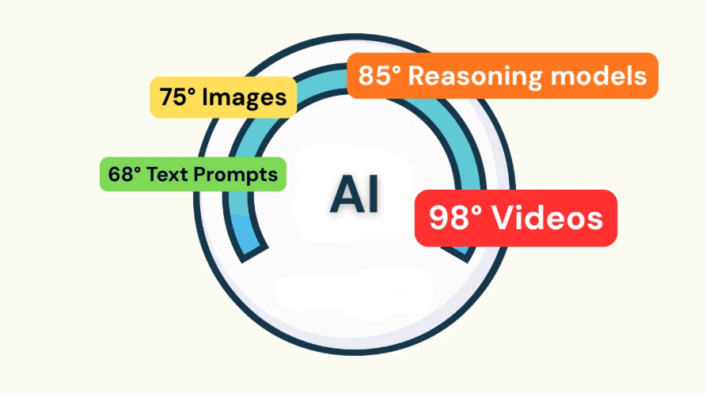

Latest
Latest
#150 — I Keep Getting Back on the AI Roller Coaster
How about you? Let's compare notes!
Read on Substack →Practical, honest writing about AI and technology for nonprofit leaders. 150 issues and counting.
StrefaTECH just hit issue #150. To keep it useful, I need to know what's working — and what isn't. It takes about 2 minutes and genuinely changes what I write about.

I've spent years in nonprofit technology consulting and IT leadership — the room where technology meets mission, and where good intentions don't always survive contact with the tools.
StrefaTECH is my way of making sense of it all: one idea at a time, for people who care about doing it right. No vendor hype, no academic jargon. Just practical thinking from someone who's been in the room.
The three circles aren't just a logo — they're the whole idea.
What's actually happening in AI, data, and tech — researched, sourced, and fact-checked before it lands in your inbox.
The tools, platforms, and practices that matter to the sector right now — not last year's news.
The context, constraints, and mission realities that shape how technology actually works — or doesn't — in your organization.
A sampling of what's been on my mind lately.
Latest
How about you? Let's compare notes!
Read on Substack → Also Recent
Also Recent
I asked NotebookLM to generate an Oxford-style debate on AI and the environment. Then I gave it a real motion, real sources, and real stakes. Here's what happened.
Read on Substack → Transcript, prompts & audio →
Most Popular EverWhat every AI user should know about the hidden environmental cost of a simple prompt — and four things you can actually do about it.
Read on Substack →If you're here from my NTC talk — welcome. The question I posed isn't rhetorical. The conversation in the comments on issue #143 is already going, and it's a good one.
Use the simplest AI model that gets the job done.
Generate images and video with intention, not habit.
What are you going to do differently? What questions did the talk leave you with? I read every comment.
Not subscribed yet? Issue #149 is already out — and there's more where this came from. Subscribe free →
Make Good Choices